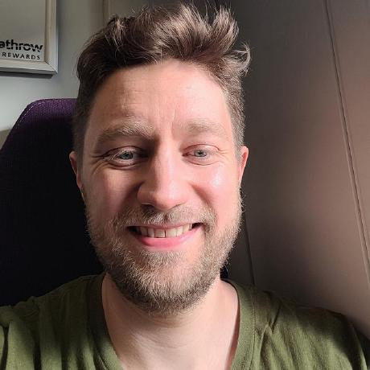

|
 |
I am currently a Postdoc at the Department of Molecular Medicine (MOMA) at Aarhus University, Denmark, working in the Computational Genomics & Transcriptomics group led by Prof. Jakob Skou Pedersen. My work focuses on developing AI models for detecting and predicting cancer from cell-free DNA (cfDNA) genomics data using large cancer genomics datasets. Previously, I completed my PhD at the Department of Electrical and Computer Engineering at Aarhus University under the supervision of Assoc. Prof. Christian Fischer Pedersen. My PhD thesis, currently under assessment, focuses on survival prediction models for precision medicine, studying multiple time-to-event outcomes and censoring mechanisms, with applications such as predicting functional decline in ALS patients and estimating fall risk in older adults. As part of my PhD, I visited the Department of Computing Science at the University of Alberta, Canada, where I was supervised by Prof. Russ Greiner. My research interests lie in developing AI methods for healthcare, particularly for cancer detection, minimal residual disease (MRD) prediction and survival analysis. See my publications on Google Scholar and projects on GitHub. Contact: clillelund [at] clin.au [dot] dk. |